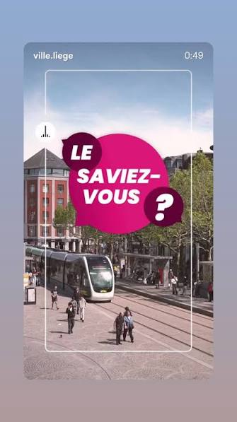

CityLoop Quest Liège


Le Perron a connu une vie mouvementée : après le sac de Liège en 1468, Charles le Téméraire le fit emporter à Bruges. Son retour après la mort du duc fut bien plus qu’un transport de pierre ; il répara symboliquement l’honneur politique de la cité.
La place Saint-Lambert paraît ouverte et moderne, mais elle recouvre le cœur le plus sacré de l’ancienne ville. La cathédrale disparue était immense. Marcher sur cette place, c’est traverser un vide urbain créé par une révolution et rempli ensuite par la mémoire.
La sauce lapin ne doit pas son nom à un pauvre animal mijoté dans la casserole. L’explication la plus racontée renvoie à une famille Lapin associée à la recette. Voilà une bonne nouvelle pour les lapins et une excellente excuse pour commander des boulets.
Liège aime aussi les surnoms : la Cité ardente, Lîdje en wallon, Outremeuse, La Violette, La Belle Liégeoise. Ces noms ne sont pas de simples étiquettes touristiques ; ils montrent une ville qui personnalise ses lieux comme des personnages familiers.